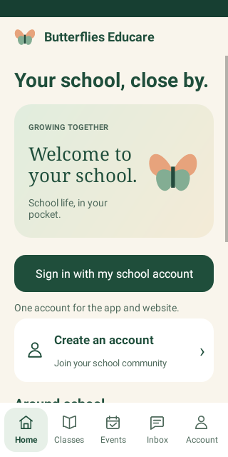

A mobile home for Butterflies.
Android 0.2.0 · Test release · Android 8 or newer
Download Android app (.apk)What’s new
- A butterfly launch screen, with subtle animation on newer Android phones.
- Home, Classes, Events, Inbox and Account stay within reach in a fixed bottom bar.
- Quick family shortcuts and a compact welcome screen.
- Classes and events use short lists with their own detail screens.
- Rounded touch controls, native back navigation and clearer form labels.

Updating your app
Download the APK and open it. If you installed the earlier 0.1.0 test, remove that old app first, then install this version. This test build has a different Android signing certificate. Your account and school records remain in the school system; sign in again after installation. Sign in with the same email and password used on the school website.
This remains a test version. Internet access is required. Full registration entry, policy documents and advanced school administration still open on the website. A native iPhone version is not available yet.
Native navigation, sign-in screens and encrypted storage were checked on Android emulators. Please test your own account and school workflows on your phone before wider rollout.